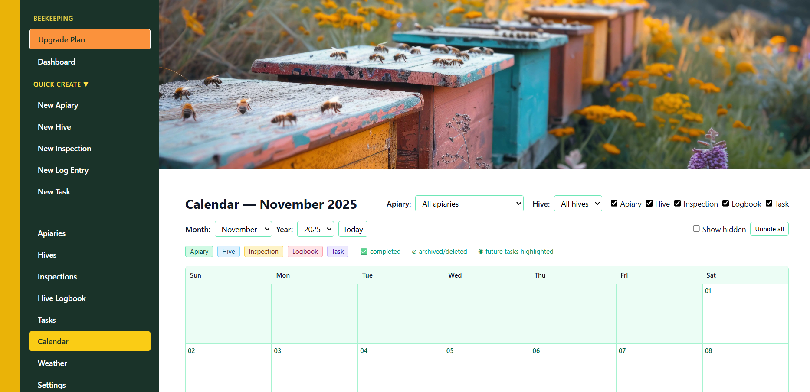

Stay organised at each hive
Log inspections with notes on brood, stores, queen status, temperament and actions taken. Quickly see when you last visited each hive.

HiveTag is a UK-focused web app designed to replace paper hive inspection sheets, notebooks and scattered spreadsheets by bringing apiaries, hives, inspections, tasks, colony health notes and costs into one place.
HiveTag works fully without NFC for simple digital record-keeping. If you choose to upgrade to the Premium plan, you can also use optional NFC hive tags to tap a hive and open its record instantly — ideal for busy apiary days and wet gloves. NFC features require a compatible device and separately purchased tags.
Last updated: 1 May 2026
Log inspections with notes on brood, stores, queen status, temperament and actions taken so you can see what happened and what still needs doing.
Link tasks and to-dos to apiaries and hives, from feeding and treatments to equipment changes and follow-up checks.
Record inventory, sales and expenses so you can see what your beekeeping is really costing or earning over the season.
HiveTag includes a bee disease observation helper to guide what you record during inspections. It supports note-taking and follow-up, but it is not a diagnosis tool.
HiveTag focuses on a few things done well rather than endless menus and settings. It is meant to support the way real beekeepers work in the field.
Log inspections with notes on brood, stores, queen status, temperament and actions taken. Quickly see when you last visited each hive.

Link tasks and to-dos to apiaries and hives so you can plan your next visit more easily.

Track inventory items, expenses and sales so you can see what your beekeeping is really costing or earning.

Use the Colony Health Check to guide your observations during inspections and record common symptoms more clearly.
The app is designed to be simple enough that you will actually use it after a long afternoon in the bees.
Add your email, log in from any device and get started with 1 apiary and 2 hives.
Give each colony a clear home in the app so you know which hive is where and what is happening in it.
Log checks, feeding, treatments and observations while you are in the apiary or later when you are back indoors.
Use the bee disease helper to guide what you record, what you checked and what should happen next.
Keep an eye on where your beekeeping money is going, from jars and foundation to honey sales and running costs.
HiveTag works perfectly well without any additional hardware. Optional NFC hive tags are available as a Premium feature for faster access at the apiary.
HiveTag includes a free plan for UK hobby beekeepers. You can start with 1 apiary and 2 hives, record inspections, manage tasks and keep simple digital hive records without paying anything upfront.
HiveTag is designed so you can start small and grow into more features when you need them – no pressure to upgrade.
£0 per month
Perfect for trying HiveTag properly with 1 apiary and 2 hives included.
No credit card required.
£4.99 / month
Everything in Free, without limits, plus NFC tap-to-log inspections and a dashboard view of tagged hives.
Cancel anytime. All prices include VAT where applicable. NFC features require compatible devices and separately purchased tags.
You can stay on the Free plan for as long as you like. If your beekeeping grows and you want more headroom, you can upgrade securely through Stripe from inside the app.
No. HiveTag runs in a web browser on most modern phones, tablets and laptops. Optional NFC hive tags are available on the Premium plan.
Yes. HiveTag includes a Colony Health Check that guides you through common symptoms so you can record what you observe during inspections.
Yes. Although it was built by a beekeeper in South Wales, HiveTag is designed for hobby and small-scale beekeepers anywhere in the UK.
No. You can log in from any device with a browser and internet connection, so you can check hive notes at home or in the apiary.
Yes. You can stay on the Free plan for as long as you like and upgrade securely through Stripe later if your beekeeping grows.
Of course. You can export or copy your key records at any time and cancel a paid plan if you decide it's not right for the way you keep bees.
HiveTag comes from the same place as the main BeezKnees website – a hobby beekeeper in South Wales who wanted clearer records and less guesswork from one season to the next.
Whether you are running a single hive at the end of the garden or starting a small out-apiary, HiveTag is there to support your decision making, not replace it.
Want to know more about BeezKnees and the thinking behind the site? Read our About page.